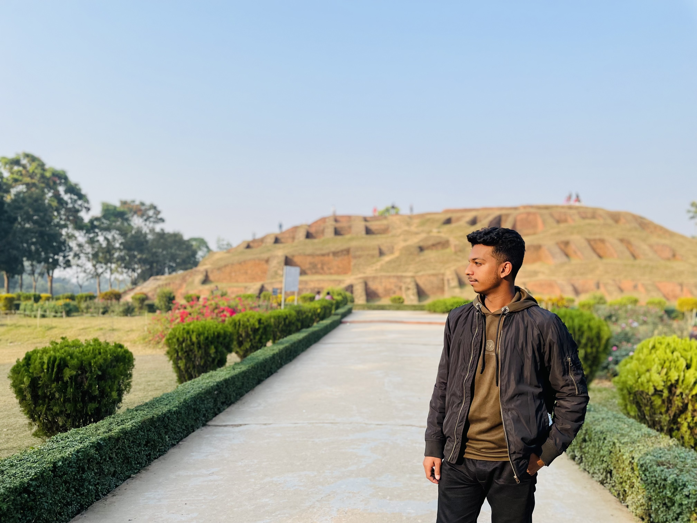

View archive ↗
View archive ↗Bandarban
Quiet scale, open horizons and a different sense of distance.
A personal collection of places explored, details noticed and moments worth keeping — with curiosity as the constant.

A way of seeing, not a finished point of view.
I'm interested in how things work, but just as curious about everything beyond a screen.
I enjoy discovering new places, noticing small details and capturing moments through photography. Technology keeps me curious; travel broadens my perspective.
I'm still discovering what matters to me.
A small selection from journeys near and far. Each frame is a note from a place that stayed with me.
View archive ↗Quiet scale, open horizons and a different sense of distance.

View archive ↗Fragments of a journey, collected along the way.
 View archive ↗
View archive ↗Still water, shifting light and room to pause.
 View archive ↗
View archive ↗A meeting of sky, sea and the changing colours between.
An evolving lookbook of scenes, textures and small discoveries. Open any frame to view it in detail.
For a conversation, a shared idea or simply to say hello.